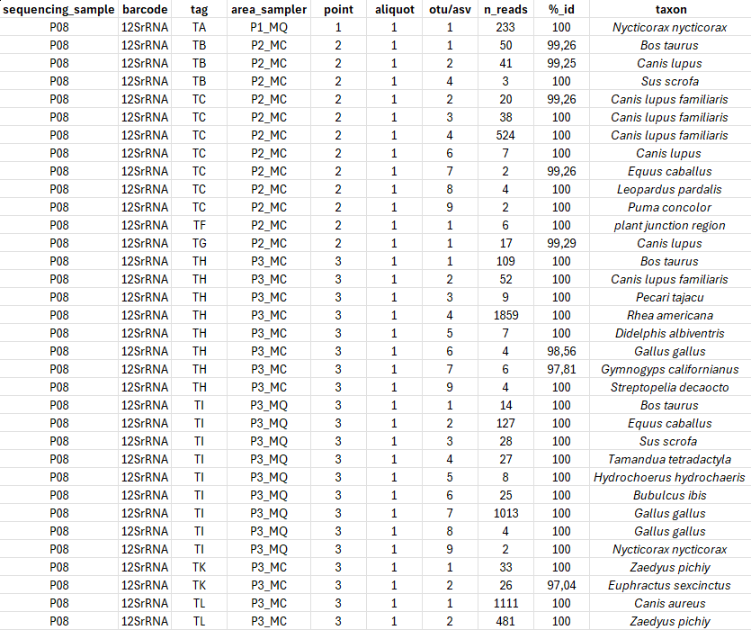
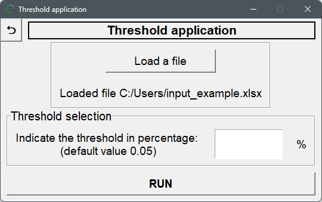

eDNAnalyzer MANUAL
eDNAnalyzer MANUAL
eDNAnalyzer is a user-friendly and open-access computational tool developed to process and filter taxonomic assignment data from metabarcoding studies, particularly derived from environmental DNA (eDNA) and invertebrate-derived DNA (iDNA) approaches.
How to cite eDNAnalyzer?
Olimpio, L.W.G.F.; Gestich, C.C.; Saranholi, B.H.; Galetti Jr, P.M.; Freitas, P.D. 2025. eDNAnalyzer: a fast and user-friendly computational tool for processing massive taxonomic assignment data derived from eDNA and iDNA metabarcoding (doi: ).
How to access the eDNAnalyzer?
You can find the eDNAnalyzer tool by accessing the GitHub repository at https://github.com/Leo-9821/eDNAnalyzer.
The executable file (.exe) is available for Windows®, while the Python source code (.py files) can be used to run the program on Linux® or macOS®. In this case, download the "main.py" and "metabar.py" files and "img" folder to the same directory in your computer.
How does eDNAnalyzer work?
The software provides two main functions: "Threshold application" and "Results consolidation", each requiring a specific input file. Examples of input and output files are available in the repository https://github.com/Leo-9821/eDNAnalyzer/tree/master/example_files.
An overview of the general operation of the program, showing its interfaces, is provided at the end of this manual, along with more detailed initial instructions for performing the two main functions of eDNAnalyzer: "threshold application" and "results consolidation".
Choosing the option Threshold Application
This option processes data from prior taxonomic assignments by calculating the total number of reads per OTUs/ASVs/ASV per sequencing sample, filtering out OTUs/ASVs according to an adopted threshold value (default ≥ 0.05), and generating outputs following selected filters.
Process Overview:
- Calculate the total number of reads per OTUs/ASVs/ASV per sequencing sample, based on previous taxonomic assignments provided (input file).
- Filter OTUs/ASVs according to an adopted cutoff value (default: ≥ 0.05%).
- Generate files (output files) containing the total number of reads per OTUs/ASVs/ASV, the OTUs/ASVs that did not pass by the threshold value and the OTUs/ASVs that passed.
Input File:
A file in .xlsx or .csv format (e.g., example_input.xlsx), containing the taxonomic assignment data, must be provided with the following required columns:
- sequencing_sample (identification of sequencing samples)
- area_sampler (indicating the collection area and DNA sampler - e.g., water sample, soil sample, invertebrate used as sampler, etc. - and ensure that both areas and samplers are unambiguously identified to avoid errors during separation. Use an underscore to separate the area from the sampler: area_sampler)
- point (indicating the collection point)
- n_reads (number of reads per OTUs/ASVs/ASV)
- taxon (taxon determined from taxonomic assignment)
Extra columns containing additional information can also be included in the table, as shown in Table 1.
Table 1: Summary table of an input file showing the general information to perform the threshold application step.
Output Files:
All tables can be saved in .xlsx and .csv format. See an example of a file provided in this step in Table 2.
Table 2: Summary table of an output file showing the data processed after running the threshold application step.
Choosing the option Results Consolidation
This process will provide tables with the results, lists of species with their number of detections and reads. The tables can be generated by separating the lists by sampler, area, or both.
Process Overview:
- Edit the table containing the OTUs/ASVs of interest by completing the final_otu/asv_curated column with the selected taxonomic assignment after manual curation. This step aims to review and refine taxonomic identification to correct possible inconsistencies in assignment; for this, data on species distribution and field observations must be incorporated for better accuracy.
- Input the curated table (input file) into eDNAnalyzer, and the program will process the data and then return the information of interest according to the filters selected by the user (e.g.; sampler, area, or sampler and area).
- Generate files with consolidated results (output files) in .xlsx and .csv formats. When necessary, .csv files in a .zip file will be provided.
Input File:
The input file (Table 3) for the "results consolidation" step is a table (in .xlsx or .csv format) containing the final OTUs/ASVs/ASV data from the previous threshold application step and the curated OTUs/ASVs/ASV list.
Table 3: Summary table of an input file showing the general information to perform the consolidation step.

Output File:
All tables can be saved in .xlsx and .csv formats. See an example of a file provided in this step in Table 4.
Table 4: Summary table of an output file showing the consolidated results after running the consolidation step.
Note that the taxon list is presented according to the filter selected in different guides of the datasheet.

General Operation of the eDNAnalyzer Program
After accessing the program at https://github.com/Leo-9821/eDNAnalyzer, follow the steps by clicking on the options available.
Step 1: Select the language
Choose a language
Step 2: Read the manual and then choose one of the two processing options
Choose the process to run: Threshold application or Results consolidation
Step 3: Choose the option threshold application
Select "Threshold application" from the menu
Step 4: Load a file containing the taxonomic assignment data
Click on "Load a file" and select your input file
Step 5: Check the provided folder directory to ensure that the file was loaded correctly
Verify the file path displayed on the screen
Step 6: Insert a threshold value in percentage or keep empty to use the default (0.05%) and run the Threshold application step
Enter your desired threshold value or use the default, then click "RUN"
Step 7: After running the threshold application, three output files will be generated
Save at least the file with OTUs/ASVs with reads equal to or greater than the adopted threshold in .xlsx or .csv format for manual curation and use as input for the results consolidation step.
Step 8: Choose the option results consolidation
Return to the main menu and select "Results consolidation"
Step 9: Load a file containing a curated table after running the threshold application step
Click on "Load a file" and select your curated file
Step 10: Check the provided folder directory to ensure that the file was loaded correctly
Verify the file path displayed on the screen
Step 11: Select the options to filter the data by sampler and/or area
Check the appropriate boxes for "Sampler" and/or "Area"
Step 12: If you selected the "sampler" option, type the sampler IDs
Enter the sampler IDs, separating them by pressing "Enter". If you didn't select "Sampler", leave this field blank.
Step 13: Save the tables generated with the data selected according to the chosen filters
To compress all the generated tables in .csv format into a single .zip file, select the ZIP option. This will save the consolidated results with the final list of taxa, and information about the number of reads that each taxon presented and the number of times it was detected.